2 Planning
This chapter is about the ‘Planning’ analysis in the ‘Audit Sampling’ section of the module.
2.1 Purpose of the analysis
The goal of the planning analysis is to determine the minimum sample size needed to meet the audit’s objectives. For example, a common audit objective is to obtain a specific level of confidence that the misstatement in the population is below the tolerable misstatement rate. This rate can be expressed as a monetary amount, known as performance materiality.
2.2 Practical example
Let’s consider an example of a planning analysis. Imagine we are auditing a population of 1,000 items with a total value of €1,000,000. In this scenario, we aim to determine the minimum sample size required to conclude, with 95% confidence, that the population does not contain misstatements exceeding the performance materiality of €30,000, which is 3% of the total value. Furthermore, we aim to incorporate a buffer and approve the population if a single misstatement is identified in the sample.
2.2.1 Main settings
To plan the minimum sample size for this audit objective, we open the ‘Planning’ analysis within the Audit module. The interface for the planning analysis is displayed below.
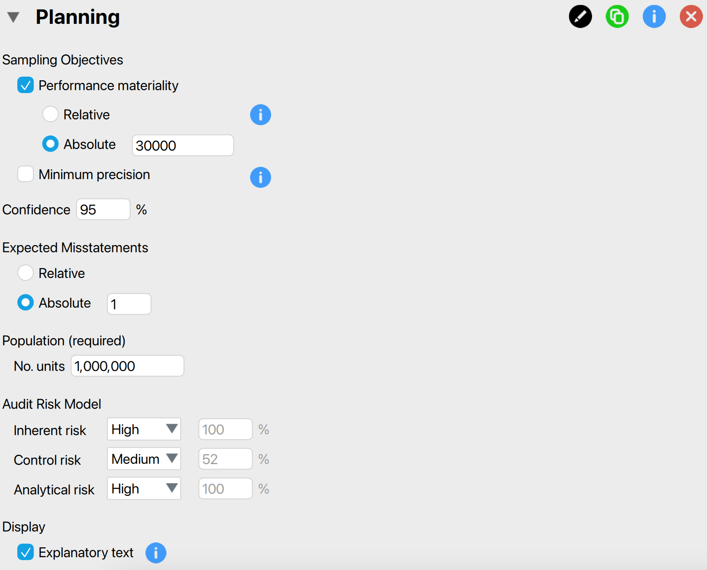
These are the main settings for the analysis:
Sampling objectives: Performance materiality: In this section, we can input the performance materiality either as a percentage (relative) or as a monetary amount (absolute). If we choose to enter it as a monetary amount, we must also specify the number of units in the population. Here, we enter €30,000 as the absolute performance materiality.
Sampling objectives: Minimum precision: We can choose this setting if we want to identify the misstatement in the population with a specified minimum uncertainty (i.e., the difference between the most likely misstatement and the upper limit for the misstatement). However, since this is not relevant to our audit objective, we leave this box unchecked.
Confidence: Specify the confidence level for your analysis. This level, which complements the significance level, dictates when to reject the null hypothesis and, consequently, the amount of work needed to approve the population. A higher confidence level necessitates more audit evidence to conclude that the population is free of material misstatement. In this example, we use a confidence level of 95%.
Expected misstatements: Specify the number of misstatements tolerated in the sample. This means that if you find the specified number of misstatements in the sample, you can still approve the population. In this example, we tolerate a single misstatement, so we specify this setting to an absolute value of 1.
Population: No. units: Specify the number of sampling units in the population. If you intend to select monetary units, this represents the total value of the population. If you plan to select items, this refers to the number of items in the population. In this case, we intend to use monetary unit sampling and hence we fill in the total population value of €1,000,000 here.
Audit risk model: Indicate the risks of material misstatement using the audit risk model. This model helps reduce the required confidence level for the audit sampling procedure (1 - detection risk) by assessing inherent risk, control risk, and analytical risk. This results in less persuasive audit evidence being required. The model is expressed as: \[\text{Audit\,risk} = \text{Inherent\,risk} \times \text{Control\,risk} \times \text{Analytical\,risk} \times \text{Detection\,risk}\]. Inherent risk, control risk, and analytical risk are typically evaluated on a 3-point scale: high, medium, and low. These assessments are mapped onto percentages based on professional judgment. The standard percentages used by JASP for Audit are based on those used by the Dutch independent government auditor and are provided in the output table below.
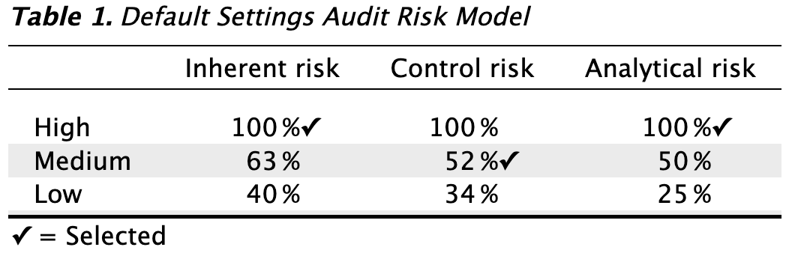
In this example, let’s assume we have conducted internal control testing, enabling us to set the internal control risk to ‘Medium’, which corresponds to 52%. Consequently, the detection risk can be calculated as \(\frac{0.05}{1 \times 0.52 \times 1}\) = 9.6%.
Display: Explanatory text: Finally, select whether to show explanatory text in the output.
2.2.2 Main output
The main table in the output below displays the performance materiality as a proportion, along with the probabilities for the audit risk model. In this scenario, the detection risk is 9.6%. The second-to-last row indicates the tolerable misstatements as a number, showing that only a single misstatement is allowed in the sample. The final row presents the minimum sample size required to meet the sampling objectives, which is 130 units in this case. The note below the table clarifies that this sample size is determined using the binomial distribution (check out the ‘Advanced’ section for alternative methods).
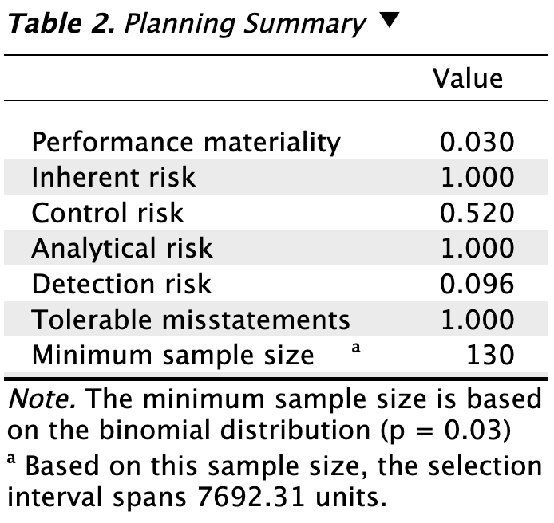
2.2.3 Report
The following settings enable you to expand the report with additional output, such as tables and figures.
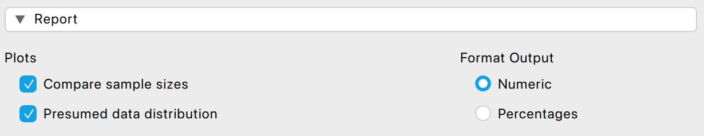
Plots: Compare sample sizes: This setting generates two figures. The first figure illustrates the minimum sample size under three statistical distributions commonly used in statistical auditing: the Poisson distribution, the binomial distribution, and the hypergeometric distribution. The second figure displays the minimum sample size for various tolerable misstatements.
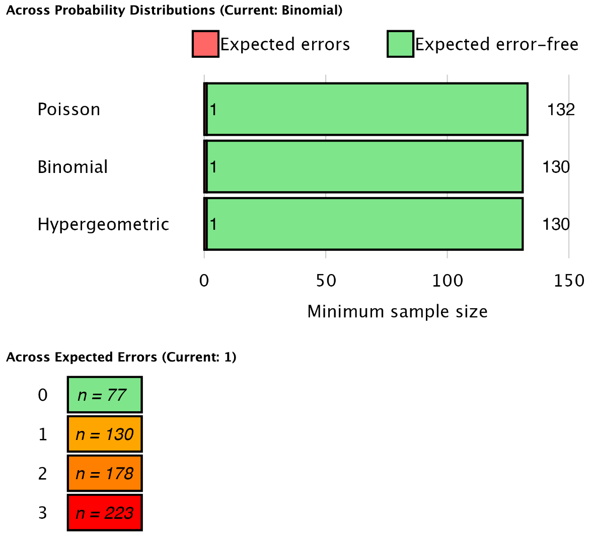
Plots: Presumed data distribution: This figure illustrates the presumed distribution of misstatements in the sample under the hypothesis of material misstatement in the population. The red bar highlights the tolerable misstatements, which together have a probability lower than the detection risk. In this scenario, the figure visualizes that if the population contains material misstatement, there is a 1.9% + 7.7% = 9.6% probability of observing zero or one misstatements in the sample of 130 units. This probability is sufficiently low to reject the hypothesis of tolerable misstatement.
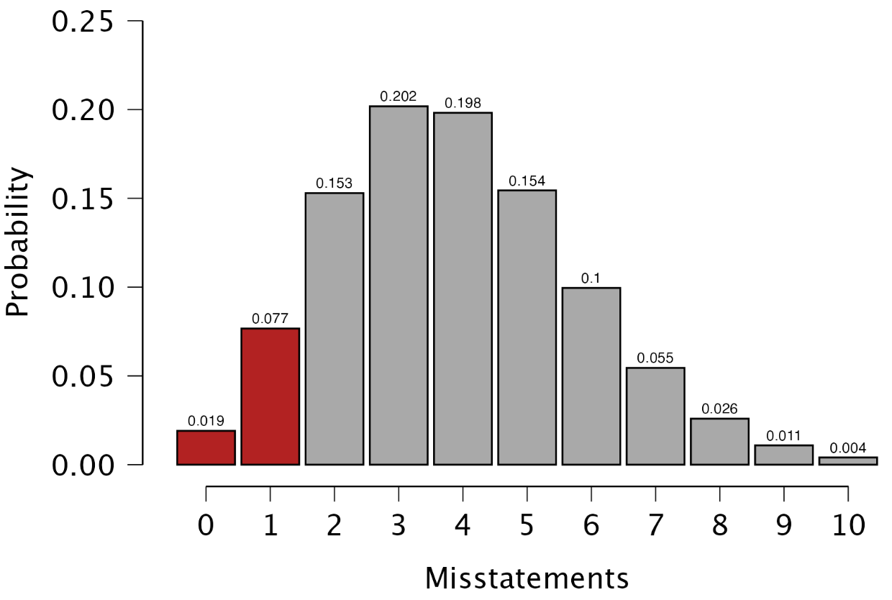
Format output: This setting lets you choose whether certain numbers in the tables are displayed as proportions or percentages.
2.2.4 Advanced
The following advanced settings enable you to customize the statistical computations according to your preferences.
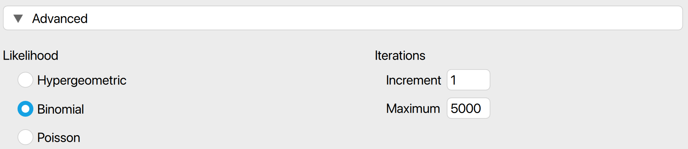
- Likelihood: The likelihood is the distribution used to calculate the probabilities of observing a certain number of misstatements. The hypergeometric likelihood (available only if ‘No. units’ is filled in) assumes a finite population and results in smaller sample sizes for small populations. The binomial and Poisson distributions yield similar sample sizes when the population is large.
- Iterations: Increment: Select the step size for the sample sizes to be considered. For example, a value of 5 will include sample sizes of 5, 10, 15, etc., while a value of 20 will include sample sizes of 20, 40, 60. The default value for this setting is 1, which considers all possible sample sizes.
- Iterations: Maximum: Choose the maximum sample size to be considered. The analysis will stop if the sample size exceeds this value. The default value is 5000.
2.3 Bayesian planning
The Audit module includes an analysis called ‘Bayesian Planning,’ which is the Bayesian variant of the planning analysis. This enhanced analysis offers additional options beyond those available in the classical planning analysis, emphasizing the integration of various types of pre-existing audit information.
2.3.1 Prior
These settings enable you to customize how different types of pre-existing audit information are integrated into the statistical analysis. For more details on the theory behind Bayesian planning and the types of prior distributions, read the corresponding section in Statistical Audit Sampling with R.
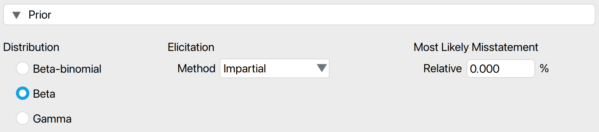
- Distribution: Select the functional form of the prior distribution. The default is the beta distribution, which is conjugate to the binomial likelihood. Other options include the gamma distribution (conjugate to the Poisson likelihood) and the beta-binomial prior distribution (conjugate to the hypergeometric likelihood).
- Elicitation: Method: Choose the type of pre-existing information to be included in the prior distribution. By default, an ‘uninformative’ prior distribution is used, which incorporates negligible information. Alternatively, the prior distribution can be based on an earlier sample, risk assessments from the Audit Risk Model, or the assumption of impartiality.
- Most likely misstatement: Indicate the mode of the prior distribution, which represents the expected most likely misstatement in the population. Keep in mind that this differs from the tolerable deviation rate in the sample. This option is necessary only when the ‘Impartial’ or ‘Risk assessments’ elicitation method is chosen.
2.3.2 Report
The following settings enable you to expand the report in the Bayesian planning analysis with additional output, such as tables and figures.
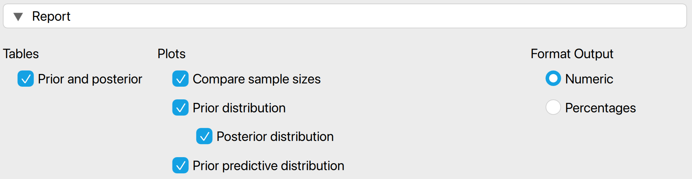
Tables: Prior and posterior: Check this box to generate a table displaying descriptive statistics of the prior distribution and the expected posterior distribution, which represents the posterior distribution if the planned sample is observed.
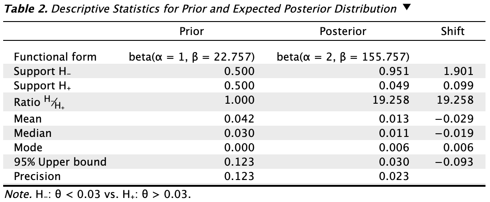
Plots: Prior (and posterior) distribution: Check this box to generate a figure displaying the prior distribution. If the box for the posterior distribution is also checked, the figure will include the posterior distribution after observing the expected sample.
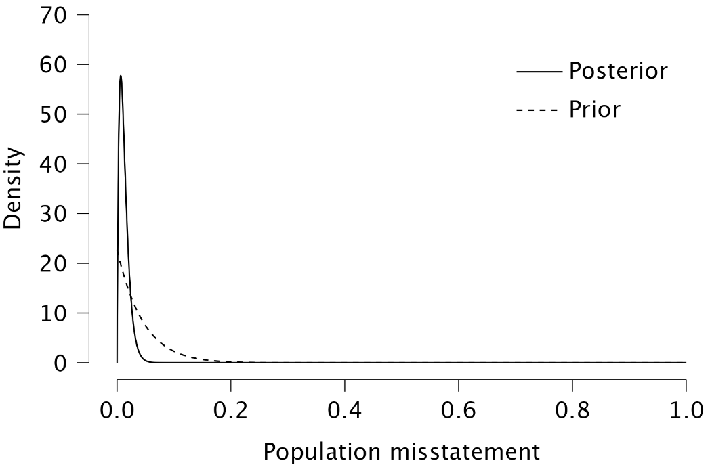
Plots: Prior predictive distribution: Check this box to generate a figure displaying the prior predictive distribution, which illustrates the probabilities of a certain number of misstatements in the sample based on the prior distribution. This can help you verify if the prior distribution is reasonable at the data level.
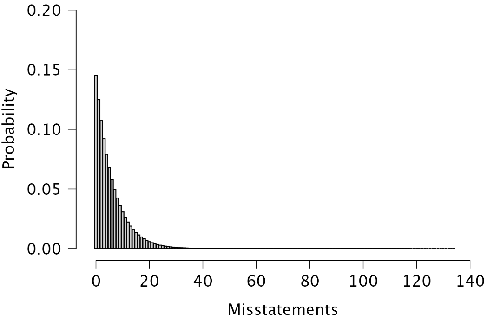